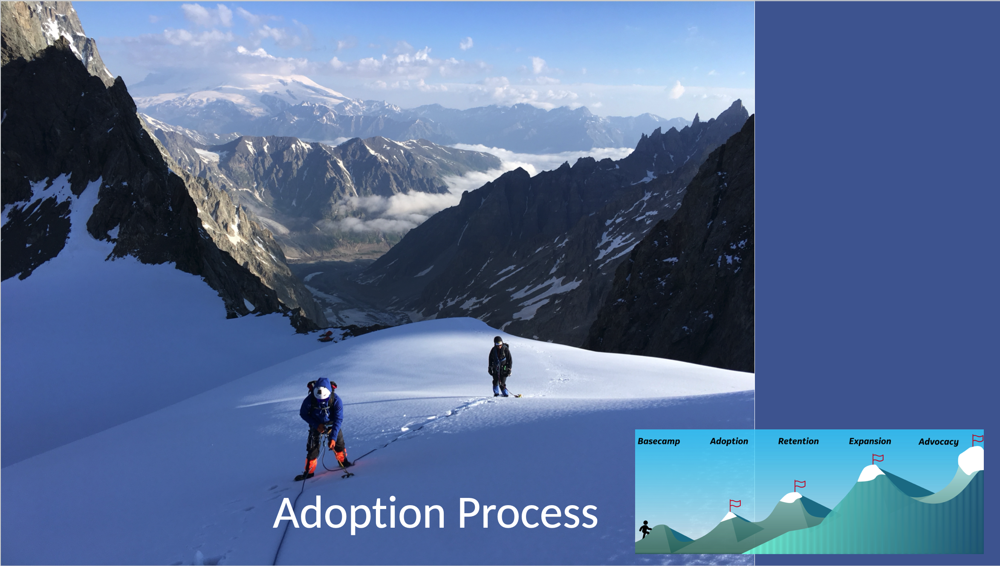

1
Product strategy & portfolio leadership
Define product roadmaps, enterprise vision, and go-to-market plans for complex systems.
Anya Gerasimchuk
Product, UX & AI Innovation
Enterprise product leadership
Designing scalable, intelligent products for regulated industries, operations teams, and mission-critical systems. This is a product transformation grounded in deep enterprise systems expertise and human-centered strategy.
I partner with teams to deliver practical innovation, measurable outcomes, and better user experiences—combining product strategy, design systems, and cross-functional leadership across product, design, and engineering.
My approach is enhanced by AI and data-driven insights to accelerate decisions, uncover opportunities, and drive impact at scale.
Define product roadmaps, enterprise vision, and go-to-market plans for complex systems.
Create intuitive experiences for enterprise users with research, prototyping, and design systems.
Integrate AI into product workflows to improve insights, efficiency, and decision-making.
Build systems and governance that support consistent, scalable UX across products.
Design products that meet enterprise data, operations, and workflow requirements.
Guide teams through strategic change across product, design, engineering, and delivery.
End-to-end product leadership from vision through launch.
Design leadership, design systems, and organization building.
Strategic AI integration, prototyping, and product innovation.
Coaching, workshops, and executive-level product guidance.

Clarify user needs, business goals, and technical constraints—using AI to synthesize inputs, surface patterns, and accelerate alignment.
Conduct research, journey mapping, and problem framing—leveraging AI for rapid insight synthesis, signal detection, and opportunity identification.
Create concepts, prototypes, and scalable experience flows—using AI-assisted ideation and rapid prototyping to explore and refine solutions faster.
Test solutions with stakeholders and users—applying AI to analyze feedback, identify trends, and iterate with speed and precision.
Contact me to discuss your organization's needs, and I will provide an initial assessment of what needs to be done, broken down into high-level steps, timeframes, and the potential resources required. We can then meet in person or via Zoom to discuss the engagement further.
Email: avgera@hotmail.com
Phone: 513.725.8035